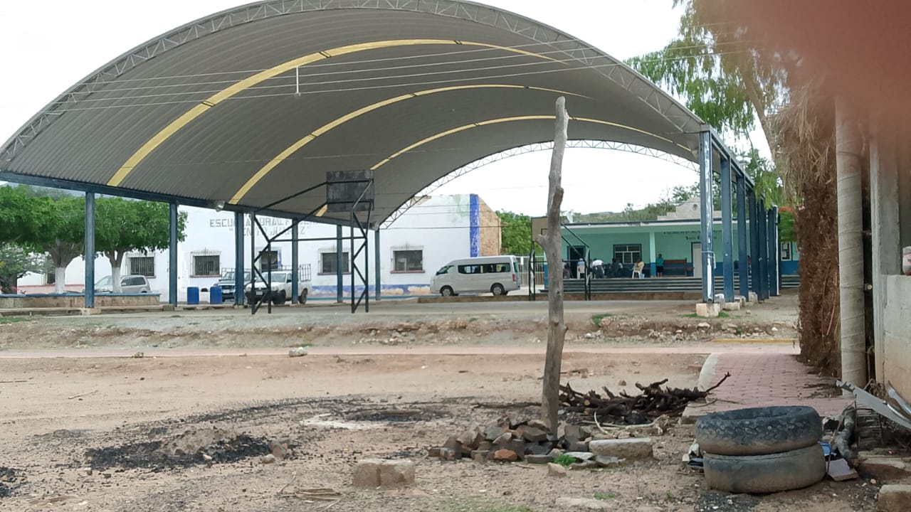
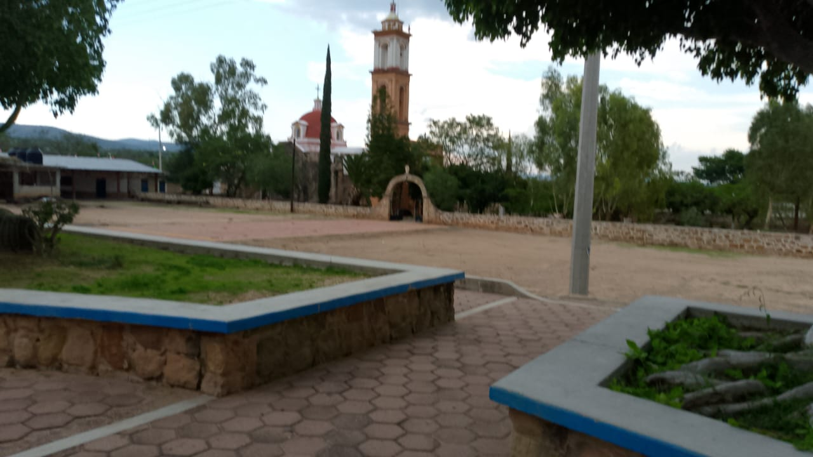
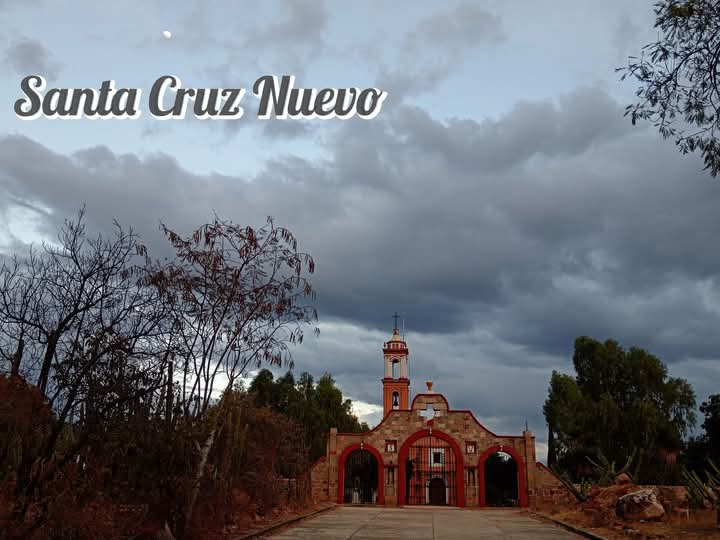
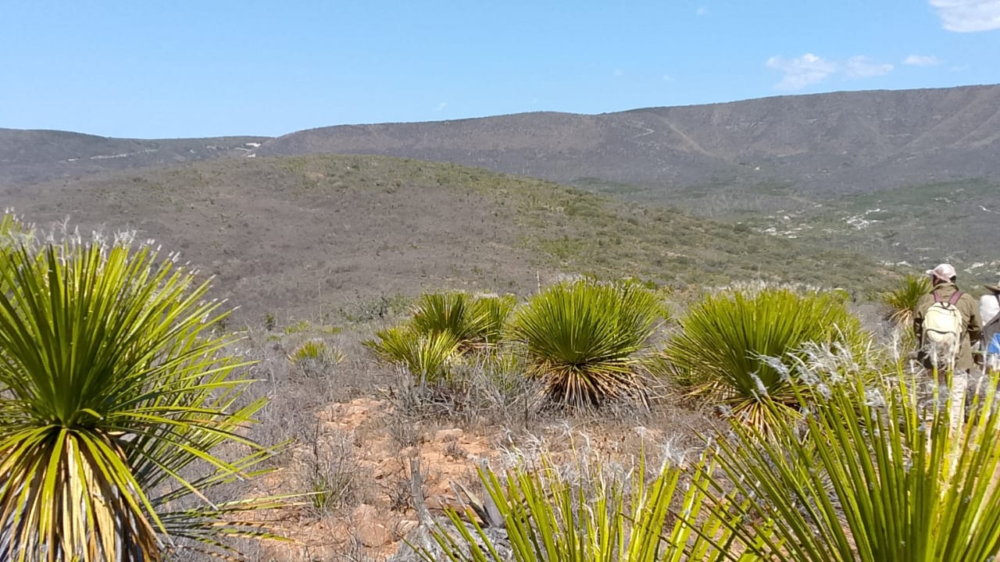

|  |
| principal |  | La historia de la comunidad de “Santa Cruz Nuevo”. Anteriormente se llamó “Santa Cruz Nueva”. La Comunidad de Santa Cruz Nuevo Puebla fue fundada en 1683, separándose de la Comunidad de San José debido a la gran extensión territorial que esta última cubría y las múltiples necesidades religiosas. La comunidad sede original fue la Comunidad de Santa Elena, pero posteriormente se rehabilitó la comunidad de la Santa Cruz y se instaló en ella la sede parroquial. |
|  |